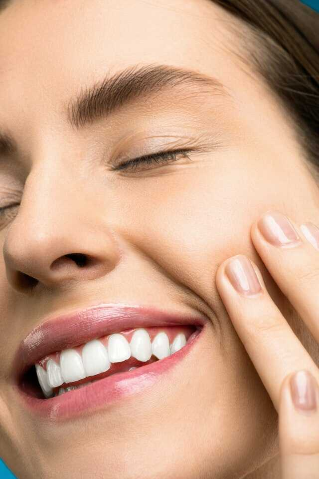
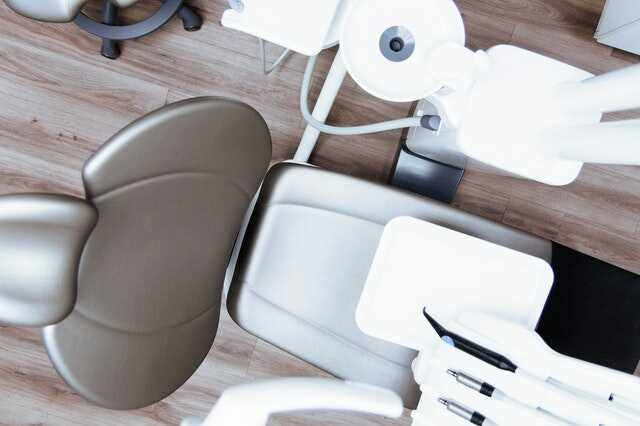
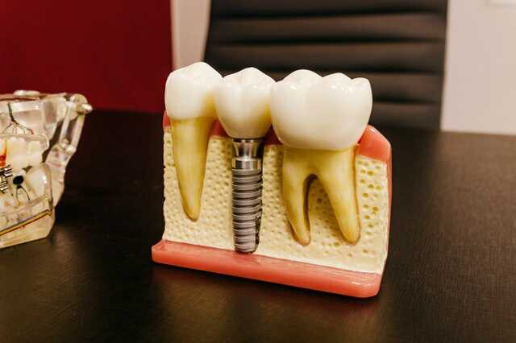

Η κλινική μας αναλαμβάνει πλήρως την αισθητική αποκατάσταση του χαμόγελου κάθε ασθενή . Αντιαισθητικές εμφράξεις ,σπασμένα δόντια,κενά διαστήματα ,συνωστισμένη οδοντοφυΐα ,δυσχρωμίες δοντιών και άλλες καταστάσεις που δυσχεραίνουν το χαμόγελο μπορούμε να τις αποκαταστήσουμε ώστε να βελτιώσουμε την αισθητική του προσώπου. Η αισθητική οδοντιατρική είναι μια διαδικασία αποκατάστασης της αισθητικής των δοντιών και γενικότερα του χαμόγελου του ασθενή χρησιμοποιώντας τη κλασσική γενική οδοντιατρική. Οι τεχνικές που χρησιμοποιούνται για τη βελτίωση του χαμόγελου είναι • Η λεύκανση • Όψεις ολοκεραμικές, ή από σύνθετη ρητίνη • Οι κεραμικές στεφάνες η γέφυρες • Τα κεραμικά η από σύνθετη ρητίνη ένθετα και επένθετα • Οι εμφράξεις(σφραγίσματα) από σύνθετη ρητίνη • Ορθοδοντική Η λεύκανση είναι μια διαδικασία όπου τα δόντια που έχουν σκουρύνει από την ηλικία, τον καφέ ,το τσάι ,το τσιγάρο κ.α αποκτούν ξανά το λευκό τους χρώμα. Η διαδικασία αυτή μπορεί να γίνει είτε στο σπίτι είτε στο ιατρείο ή και ακόμα ένας συνδυασμός και των δύο. Για τη λεύκανση στο σπίτι η κλινική μας κατασκευάζει εξατομικευμένους νάρθηκες για κάθε ασθενή ,ύστερα από λήψη αποτυπωμάτων, όπου θα υποδεχτούν το λευκαντικό παράγοντα. Στη συνέχεια ο ασθενής αφού ενημερωθεί για τη σωστή τοποθέτηση του λευκαντικού παράγοντα, τοποθετεί ,τη νύκτα κυρίως το νάρθηκα για 4-6 ώρες καθημερινά. Ο ασθενής θα συνεχίσει τη διαδικασία συνήθως για 2 εβδομάδες αν και κυρίως η διάρκεια εξαρτάται από το χρώμα των δοντιών . Για τη λεύκανση στο ιατρείο τοποθετούμε συνήθως πιο ισχυρό λευκαντικό παράγοντα από ότι στη λεύκανση στο σπίτι. Ξεκινάμε με απάλειψη προστατευτικού τζέλ στα ούλα και στη συνέχεια τοποθετούμε το λευκαντικό παράγοντα για μία ώρα συνήθως, ενώ η διαδικασία αυτή επαναλαμβάνεται δύο ή τρείς φορές ,κάτι που θα εξαρτηθεί από τη δυσχρωμία των δοντιών . Και στις δύο διαδικασίες χρησιμοποιούνται πιστοποιημένοι λευκαντικοί παράγοντες , απόλυτα ακίνδυνοι και ασφαλείς για τον ασθενή. Οι όψεις είναι φλούδες από πορσελάνη ή από σύνθετη ρητίνη όπου τοποθετούνται κυρίως στα πρόσθια δόντια για τη διόρθωση του χρώματος , του σχήματος και του μεγέθους των δοντιών. Ξεκινάμε με τρόχισμα ελάχιστου πάχους των δοντιών γύρω στο μισό χιλιοστό και σε ορισμένες περιπτώσεις γίνεται ακόμα λιγότερο η καθόλου τρόχισμα. Όταν είναι όψεις από πορσελάνη μετά το τρόχισμα παίρνουμε αποτυπώματα και κατασκευάζουμε προσωρινές αποκαταστάσεις ώστε να προστατέψουμε τα δόντια μέχρι να γίνουν οι μόνιμες όψεις. Τα αποτυπώματα τα στέλνουμε στο οδοντοτεχνικό εργαστήριο όπου σε μια εβδομάδα περίπου θα μας αποστείλει τη τελική εργασία όπου στη συνέχεια θα γίνει η μόνιμη συγκόλληση των όψεων στον ασθενή. Όταν οι όψεις είναι από σύνθετη ρητίνη μετά από μικρή συνήθως διαμόρφωση των δοντιών γίνεται η τοποθέτηση υλικού σύνθετης ρητίνης με κατάλληλη τεχνική χρωματικής σύνθεσης και ο ασθενής σε μία μόνο συνεδρία αποκτά το χαμόγελο που επιθυμεί. Με τις κεραμικές στεφάνες αποκαθιστούμε δόντια δίνοντας τους το κατάλληλο σχήμα χρώμα και μέγεθος. Απαιτούν μεγαλύτερες παρασκευές αλλά μας δίνουν την δυνατότητα να διαμορφώσουμε ριζικότερα τα δόντια και να τους δώσουμε καλύτερη λειτουργικότητα και αισθητική. Με τις κεραμικές γέφυρες αντικαθιστούμε τα ελλείποντα δόντια στηριζόμενοι στα διπλανά τους αποδίδοντας ταυτόχρονα την κατάλληλη αισθητική και λειτουργικότητα. Τα ένθετα και επένθετα γίνονται είτε από σύνθετη ρητίνη είτε από πορσελάνη και αποκαθιστούν αισθητικά μεγάλες κοιλότητες οπισθίων δοντιών. Γίνονται στο εργαστήριο και κατόπιν συγκολλούνται στις εν λόγω κοιλότητες. Τα μαύρα σφραγίσματα ή αλλιώς τα σφραγίσματα από αμάλγαμα είναι συνήθως αντιαισθητικά ενώ η περιεκτικότητα τους σε υδράργυρο παρόλο που θεωρείται ασφαλής, η οδοντιατρική ευρωπαϊκή κοινότητα έχει αρχίσει σιγά σιγά να τα εγκαταλείπει από την οδοντιατρική πράξη. Για αυτό η κλινική μας προτιμά να χρησιμοποίει ως υλικό κύριας τοποθέτησης στα σφραγίσματα τη σύνθετη ρητίνη.

Η κλινική μας αναλαμβάνει πλήρως την οδοντιατρική περίθαλψη ενηλίκων και παιδιών. Επιδίωξη μας η αντιμετώπιση του συνόλου των στοματικών προβλημάτων και αποκατάσταση της στοματικής υγείας των ασθενών μας. Η κλινική μας αναλαμβάνει θεραπείες για όλο το φάσμα οδοντιατρικής, από την απλή οδοντιατρική μέχρι και τη μικρή χειρουργική στόματος με σοβαρότητα και προσοχή για την υγεία και την ικανοποίηση του ασθενή. Κάποιες από τις εργασίες που αναλαμβάνει η κλινική μας είναι η εξής: • εξαγωγές(δοντιών απλές και χειρουργικές) • εμφράξεις • καθαρισμός • θεραπεία περιοδοντίου (συντηρητικά και χειρουργικά) • ενδοδοντικές θεραπείες(μονορίζων και πολυρίζων δοντιών) • αναπλάσεις σκληρών και μαλακών ιστών • ανασυστάσεις με άξονες • ακίνητη προσθετική (γέφυρες ,όψεις, ένθετα , επένθετα) • κινητή προσθετική (ολικές, μερικές, άμεσες και επένθετες οδοντοστοιχίες) • χειρουργική και προσθετική εμφυτευμάτων • αισθητική οδοντιατρική (λεύκανση ,κεραμικές όψεις,ολοκεραμικές στεφάνες και γέφυρες, αισθητικές αποκαταστάσεις με σύνθετη ρητίνη) • παιδοδοντία σε συνεργάσιμα παιδιά • Laser • Προληπτική οδοντιατρική

Με τα οδοντιατρικά εμφυτεύματα οι ασθενείς αποκτούν ξανά δόντια σταθερά και αισθητικά, ώστε η μασητική λειτουργία η ομιλία και η αισθητική του προσώπου να αποκαθίσταται πολύ ικανοποιητικά. Το οδοντιατρικό εμφύτευμα είναι απόλυτα βιοσυμβατό και ασφαλές για τον ανθρώπινο οργανισμό και μπορεί επάξια να αντικαταστήσει τη ρίζα ενός δοντιού που λείπει. Στη συνέχεια πάνω στο εμφύτευμα τοποθετείται η στεφάνη που αντικαθιστά τη μύλη του δοντιού δηλαδή το μέρος του δοντιού που φαίνεται στο στόμα. Το εμφύτευμα τοποθετείται σε περιπτώσεις • Που λείπει ένα ή περισσότερα δόντια και ο ασθενής δεν θέλει να τροχίσει τα διπλανά δόντια για να κάνει μία γέφυρα • Όταν ο ασθενής φοράει κινητή οδοντοστοιχία και θέλει να βελτιώσει την συγκράτησή της . • Σε ασθενείς που τους λείπουν πολλά η όλα τα δόντια και θέλουν ξανά δόντια ακίνητα και σταθερά. Τα εμφυτεύματα τοποθετούνται σε δύο φάσεις. Η μία είναι το χειρουργικό μέρος και η δεύτερη είναι το προσθετικό. Για το χειρουργικό μέρος η κλινική μας διαθέτει τον κατάλληλο χειρουργικό εξοπλισμό, διατηρεί τους χώρους σε συνθήκες άριστης απολύμανσης και διαθέτει την εμπειρία και την γνώση για την επιτυχή τοποθέτηση των εμφυτευμάτων. Η διαδικασία τοποθέτησης του εμφυτεύματος γίνεται με τοπική αναισθησία, χωρίς ο ασθενής να αντιλαμβάνεται καθόλου πόνο. Στη συνέχεια αφήνουμε το εμφύτευμα για ένα τρίμηνο περίπου να οστεοεσωματωθεί,δηλαδή να ενωθεί με το οστό βιολογικά ώστε να αποκτήσει σταθερότητα και μακροβιότητα . Για το μεσοδιάστημα της αναμονής της οστεοενσωμάτωσης τοποθετείται μια προσωρινή αποκατάσταση ώστε η λειτουργικότητα και η αισθητική του στόματος να είναι φυσιολογική. Κατόπιν ακολουθεί η προσθετική φάση όπου αφού αποκαλυφθεί το εμφύτευμα, αποτυπώνεται το στόμα και στο εργαστήριο πλέον κατασκευάζεται η προσθετική εργασία η οποία μετά συγκολλιέται η βιδώνετε στα εμφυτεύματα. Σε ασθενείς που έχουν χάσει μεγάλο διάστημα τα δόντια τους συνήθως δεν έχουν επαρκές οστό για να τοποθετηθεί σωστά το εμφύτευμα. Η κλινική μας έχει τη δυνατότητα να βοηθήσει την ανάπλαση του οστού με μοσχεύματα απόλυτα ασφαλή για τον ασθενή και αποτελεσματικό για την αύξηση του οστού. Ακόμα, όταν εμποδίζουν ανατομικά μόρια όπως το ιγμόρειο η κλινική μας μπορεί να κάνει ανύψωση ιγμορείου και να δώσει τη δυνατότητα σωστής τοποθέτησης εμφυτεύματος. Κάποιες καταστάσεις όπως η θεραπεία ασθένειας με ενδοφλέβια διφωσφωνικά ,η εγκυμοσύνη ,η νεαρή ηλικία κάτω από 18 χρονών , το εγκεφαλικό που έχει συμβεί σε λιγότερο από έξι μήνες , το έμφραγμα που έχει περάσει ο ασθενής και δεν έχει αποκατασταθεί πλήρως η καρδιακή λειτουργία αποτελούν απαγορευτικούς παράγοντες για την τοποθέτηση εμφυτεύματος.Επίσης σε περιπτώσεις ακτινοβολημένων γνάθων , αλλά και για διάφορες άλλες σοβαρές ασθένειες τα εμφυτεύματα να θεωρούνται αντένδειξη.Επίσης το κάπνισμα θεωρείται επιβαρυντικός παράγοντας για την επιτυχία των εμφυτευμάτων Ο σακχαρώδης διαβήτης όταν είναι ελεγχόμενος ,η θεραπευμένη περιοδοντίτιδα ,η λήψη διφωσφωνικών από το στόμα δεν δημιουργούν συνήθως ανασταλτικό παράγοντα για την τοποθέτηση των εμφυτευμάτων. Η τοποθέτηση των εμφυτευμάτων είναι μία διαδικασία που γίνεται πολλά χρόνια από την κλινική μας επομένως η εμπειρία μας ,η γνώση μας και ο κατάλληλος εξοπλισμός μας προσφέρει το καλύτερο αποτέλεσμα για την ικανοποίηση του ασθενή.